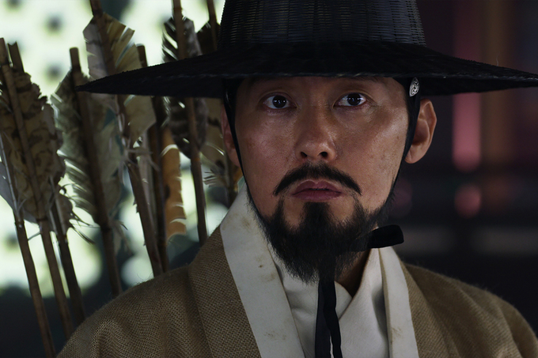

전지현을 주인공으로 한 킹덤의 스페셜 에피소드가 공개된다
글 김진우(뉴미디어팀 기자) 2020-11-02
넷플릭스 오리지널 시리즈 킹덤이 스페셜 에피소드 킹덤:
아신전(이하 아신전)으로 돌아온다. 최근 촬영에 돌입한 아신전을
이끌어갈 주인공 아신(전지현)은 지난 3월 공개된 킹덤 시즌2
엔딩에서 갑작스레 등장하며 화제가 된 캐릭터다. 아신은 생사초의
비밀을 찾아 북방으로 향했던 이창(주지훈) 일행이 마주쳤던 의문의
인물로, 등장과 동시에 시즌2가 마무리되며 시즌3에 대한 기대감을
고조시킨 바 있다.
새로 공개될 아신전에서는 북방 여진족 부락의 후계자인 아신의
전사(前史)와 생사초의 기원이 담길 예정이다. 또한 시즌2에서
강렬한 인상을 남겼던 어영대장 민치록(박병은)이 재등장해 아신과
얽힌 관계가 그려진다.
아신전은 이전 시즌과 마찬가지로 김은희 작가가 각본을 집필했으며,
시즌1 연출과 시즌2 총괄제작을 맡았던 김성훈 감독이 연출을
맡았다. 제작은 바람픽쳐스, BA엔터테인먼트, 스튜디오드래곤이 공동
제작한다. 이외에 자세한 줄거리, 캐스팅은 아직 알려지지 않았다.
아신전은 현재 크랭크인에 돌입했으며 공개일은 미정이다.
